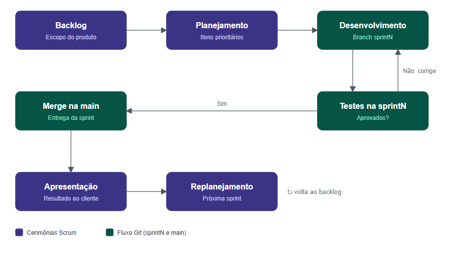

Visão do Projeto¶
Resumo do documento CoLecture: Visão do Produto e do Projeto, versão 1.2.
Histórico de revisões¶
| Data | Versão | Descrição | Autor |
|---|---|---|---|
| 24/09/2026 | 1.0 | Criação do documento com visão do produto, projeto, escopo e backlog inicial | Grupo Hamilton |
| 07/10/2026 | 1.1 | Padronização da política de branches (sprintN), correção de siglas de cenários e dos níveis de teste |
Ricieri |
| 09/11/2026 | 1.2 | Correções após as considerações do professor na correção | Ricieri |
Ciclo de vida¶
A equipe adota um ciclo de vida ágil baseado no Scrum, complementado por práticas do XP (Extreme Programming). O projeto tem várias funcionalidades e a experiência do usuário é foco principal, o que exige validações frequentes e ajustes ao longo do caminho, algo que um modelo sequencial não permite com facilidade.
- Sprints de 7 dias, com reuniões rápidas de alinhamento, reunião de revisão (o cliente avalia a entrega) e retrospectiva.
- Cada funcionalidade é implementada, testada e avaliada antes do fim da sprint; o backlog é atualizado a cada ciclo.
- Requisitos descritos do ponto de vista de quem os usa e priorizados em Must, Should e Could.
- Comunicação por Teams ou Discord e versionamento no GitHub.
Processo de desenvolvimento¶
O Scrum organiza o trabalho em ciclos curtos com cerimônias definidas, apoiado no empirismo e no lean thinking. O XP contribui com comunicação clara, trabalho em equipe e feedback do cliente. O processo começa no backlog do produto e se repete a cada sprint: a equipe seleciona os itens de maior prioridade, implementa, testa, apresenta ao cliente e replaneja.
Fluxo de trabalho Git¶
Uma branch para cada sprint, nomeada sprintN (sprint1 a sprint7), onde o desenvolvimento é feito e integrado. A main é a branch final de entrega: tudo é testado na sprintN e, após a confirmação dos testes, a sprintN é integrada à main ao final da sprint.

Figura 2 - Fluxo de trabalho planejado. Fonte: elaborado pelos autores (2026).
Organização do projeto¶
| Papel | Atribuições | Responsável | Participantes |
|---|---|---|---|
| Desenvolvedor | Codificar o produto e os testes unitários, refatorar | Ana Clara e Henrique | Ana Clara, Henrique, Letícia, Jônatas, Arthur, Ricieri, Guilherme, Gabriel |
| Dono do Produto | Atualizar o escopo, organizar as sprints, validar entregas | Ricieri | Letícia, Arthur, Ricieri |
| Arquiteto de Software | Definir arquitetura, tecnologias e padrões, orientar decisões técnicas | Arthur Miguel | Arthur, Henrique |
| Analista de Requisitos e Documentação | Levantar, analisar e documentar requisitos, manter a documentação atualizada | Jônatas | Jônatas, Arthur |
| Analista de Qualidade | Garantir a qualidade e o conceito de pronto, realizar inspeções de código | Letícia | Letícia, Ricieri, Gabriel |
| Engenheiro de Dados | Projetar, organizar e manter a estrutura dos dados | Guilherme | Guilherme, Ricieri, Ana Clara, Gabriel |
Planejamento das sprints¶
| Sprint | Entrega | Início | Fim | Entregáveis | Conclusão |
|---|---|---|---|---|---|
| 1 | Cadastro e gerenciamento de usuário | 07/10/2026 | 14/10/2026 | R01 a R04 | 100% |
| 2 | Gestão de catálogo e avaliação de livros | 15/10/2026 | 21/10/2026 | R05 a R08 | 100% |
| 3 | Manter comunidades | 22/10/2026 | 28/10/2026 | R09 e R10 | 0% |
| 4 | Metas de leitura e fóruns | 29/10/2026 | 04/11/2026 | R11 a R14 | 0% |
| 5 | Acompanhamento de progresso e ofensivas | 05/11/2026 | 11/11/2026 | R15 a R18 | 0% |
| 6 | Conquistas, recomendações e testes | 12/11/2026 | 18/11/2026 | R19 a R22 | 0% |
| 7 | Ajustes finais e apresentação | 19/11/2026 | 25/11/2026 | R23 | 0% |
Note
As porcentagens de conclusão refletem o estado registrado na versão 1.2 do documento (09/11/2026).
Além das sprints, o cronograma prevê dois marcos de controle:
- 11/11/2026, ponto de controle: release com cadastro, catálogo, comunidades, metas, fóruns e acompanhamento de leitura (R01 a R18), encerrando a Sprint 5.
- 16/11/2026, inspeção de qualidade: conduzida pelo analista de qualidade sobre o código e as funcionalidades entregues. Os reparos são tratados na Sprint 7, antes da apresentação final.
Comunicação¶
| Descrição | Envolvidos | Periodicidade | Produtos |
|---|---|---|---|
| Acompanhamento das atividades, riscos, compromissos e indicadores | Equipe do projeto | Semanal | Ata de reunião, relatório de situação |
| Comunicar a situação do projeto | Equipe e professor/monitor | Semanal | Ata de reunião, relatório de situação |
| Comunicação rápida e alinhamentos | Equipe do projeto | Conforme necessidade | Mensagem |
Ferramentas: Teams/Discord para reuniões e WhatsApp para comunicações rápidas.
Gerenciamento de riscos¶
O grau de exposição combina a probabilidade do risco com o seu impacto. Os níveis alto, médio e baixo foram definidos por consenso da equipe, e não por cálculo numérico; riscos de exposição alta têm prioridade nas ações de prevenção e contingência.
| Risco | Exposição | Justificativa | Prevenção | Contingência |
|---|---|---|---|---|
| Atraso na entrega por falta de tempo dos membros | Alto | Os integrantes cursam outras disciplinas e o cronograma de sete sprints de sete dias é curto | Sprints curtas com escopo reduzido e tarefas conforme a disponibilidade real | Redefinir prioridades, movendo requisitos menos prioritários para sprints posteriores |
| Saída ou inatividade de um membro | Médio | Probabilidade baixa em período curto, mas impacto relevante, pois algumas funções se concentram em poucos integrantes | Documentação do código atualizada e revisão de código em pares | Redistribuir tarefas essenciais e ajustar o escopo |
| Dificuldade técnica com banco de dados ou integração | Médio | O SQLite é simples, mas a integração entre models, views e fóruns pode gerar erros | Testes de integração e das principais rotas logo no início das sprints | Usar dados simulados nas demonstrações |
| Bugs críticos perto da entrega final | Alto | O prazo entre a inspeção e a entrega final é curto, com pouco espaço para correções e retestes | Testes contínuos de qualidade em todas as sprints | Priorizar login e cadastro e desativar recursos secundários com falha |
| Falta de familiaridade com as tecnologias | Médio | Parte da equipe tem pouca experiência com Django e com as práticas do Scrum e do XP | Estudos prévios e alinhamentos técnicos no início de cada funcionalidade | Apoio dos monitores e professores e reatribuição de tarefas |
Critérios de replanejamento¶
- Atraso no cronograma: taxa de conclusão inferior a 70% ao final de uma sprint; o escopo das sprints seguintes é reavaliado.
- Riscos mapeados: se um risco de exposição alta se concretizar, as tarefas são redistribuídas conforme o plano de contingência. Riscos médios ou baixos seguem o planejamento ordinário.
- Ajuste interno de prioridades: requisitos Should ou Could são adiados em favor de funcionalidades essenciais.
- Incompatibilidade técnica: se uma tecnologia ou integração for inviável no prazo, adota-se solução alternativa.
A cada revisão de sprint a equipe confere esses critérios e, se necessário, atualiza e versiona este documento no repositório.